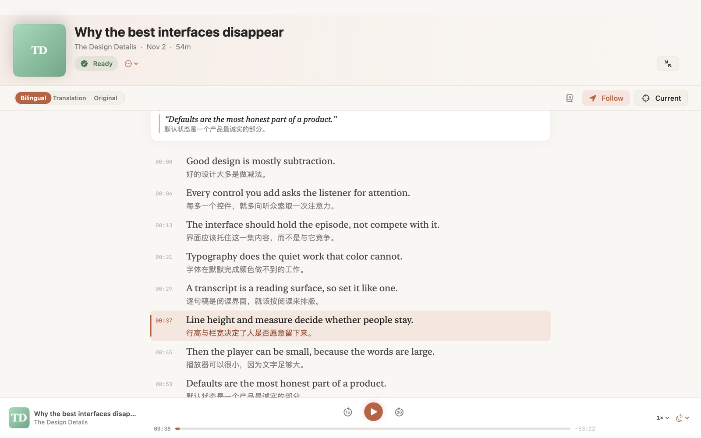
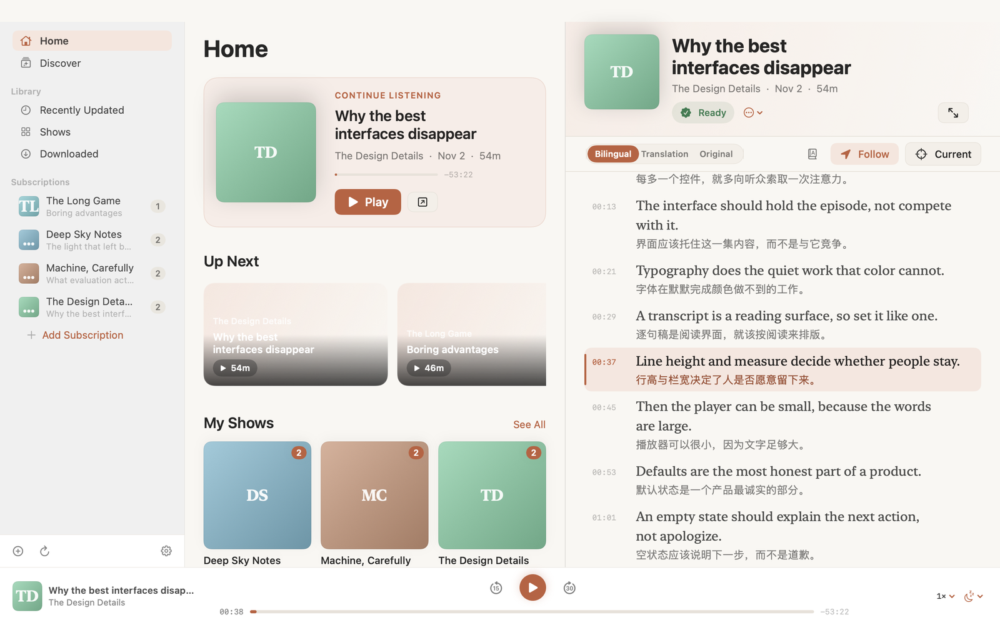
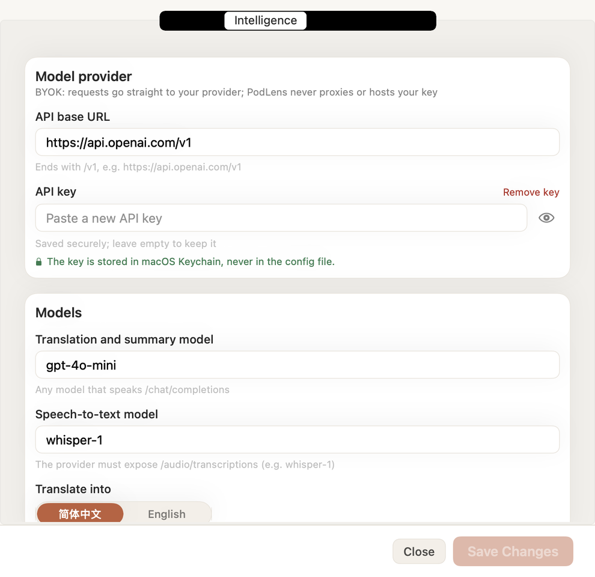

看得见的阅读体验
真实的 macOS 0.7 界面：逐句稿按阅读排版，专注聆听收起资料库，播放器常驻。截图使用合成节目，不含任何真实账号或密钥。



0.7 起 Windows 与 Linux 也具备三种阅读模式、作业取消与安全存储提示；控件保持 WinUI / GTK 原生，不复制 macOS 外观。
一集播客，三层收获
逐句稿
接任意 OpenAI 兼容转写端点（Whisper 等），输出带时间戳的逐句稿，跟随播放高亮，点句子即跳转。
对照翻译
逐句对齐翻译成中文，双语 / 只看译文 / 只看原文一键切换。听不懂的那一句，低头就有答案。
一页总结
每集自动生成一句话总结、5–8 条要点、值得记的话和话题标签——五分钟吸收一小时的内容。
BYOK
OpenAI、DeepSeek、Groq、SiliconFlow、Ollama——任意 OpenAI 兼容端点。key 存在本机，从不上传。
真原生
基于 Rivet：一份 Racket 核心嵌入进程内，macOS 是 SwiftUI，Windows 是 WinUI 3。没有 Electron，没有套壳。
Agent 友好
同一核心的 CLI：add / transcribe / summarize / --json / 稳定退出码。让编码 agent 替你处理播客。
精选目录
内置 16 档经典英文播客（科技/安全/科学/设计/商业/资讯），「发现」面板一键添加，绝不自动订阅；每个条目发布前都实测可达。
三步流水线
转写
音频进 ASR 端点，长单集自动分段，逐句带时间戳缓存。
翻译
逐句送入对话模型，编号对齐返回，翻译永远和原句一一对应。
总结
全文压缩成结构化 JSON：TL;DR、要点、引用、话题，可被任何工具消费。
全部结果缓存在 ~/.podlens/，纯 JSON——你的数据永远可以带走。
从订阅到阅读
添加节目
从「发现」选择节目或添加播客源。成功后，节目会出现在媒体库。
打开单集
打开单集并播放。逐句稿、翻译和总结是否可用，取决于该集内容与模型配置。
处理与复查
按需配置自己的模型服务，生成转写、翻译或总结。结果保存在本机；失败时检查网络、密钥和服务商响应。
下载
全部版本 · Windows：MSI 安装器自带开始菜单/桌面快捷方式，zip 为便携版；macOS：首次启动（未公证构建）右键 → 打开。更新通过 Ed25519 签名清单自动推送。